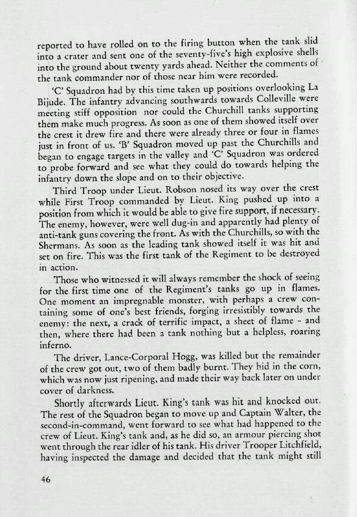

You are here:
Home
>
The Story of the Twenty-Third Hussars
> Page 46
< Prev
Next >

Men
Peter John William Robson
David Ferguson King
Edward Charles Hogg
Peter Challice Walter
Gerald Litchfield
Locations
La Bijude
Colleville
Notes
These events clearly took place on June 26. However the death of L/Cpl
Edward Charles Hogg
is stated to have occurred on June 27. This is incorrect.
The
Roll of Honour
, carved in Husum, Germany, and later installed in Bridlington Priory, gives the correct date.
< Prev
Next >